微出国 · 学
路线 › 知识卡
知识卡：不看正文也能拿到核心内容
全站 65 张知识卡，按页面分组。一张卡只画正文里的一段——一个判断、一条算法、一份清单；卡上每个字都能在对应页面的正文里找到（资料核验 2026-07-13）。
路线（首页）

- 先看先看权重栏，再对应题数栏，分清卷面重心。
- 易漏Auto 还覆盖消费者保护、共享出行、Enhanced Care 等子项。
- 下一步去讲义核对子项，再到练习按权重分配复习。
考纲权重：一切学习计划的地基


四条持牌路径全对比


两本书说法不一致时该信哪个


法律责任与责任险


违反保障条件：法条口径和考试口径不一样的三处


Enhanced Care：谁先掏钱，收入替代怎么算


理赔：期限表与理赔人的三种身份
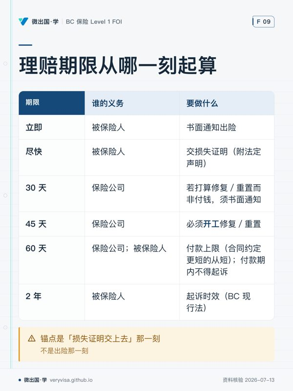
- 先看先找同一期限同时落到两方的那行，别把付款和起诉混成同一义务。
- 易漏容易把付款上限误读成被保险人的动作；同一期限里其实分属两方。
- 下一步去练习，按「期限—义务人—动作」逐行自测。
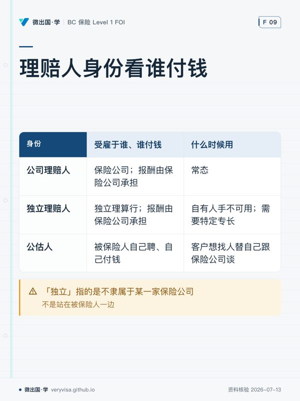
- 先看先从付款关系入手，再看每类人出现的场景。
- 易漏公估人是行业里真实存在的第三种，但考试口径没把它当已知事实考。
- 下一步去模考，遇到「独立」先追谁委托、谁承担报酬。
共保首页警示与 CGL 的四格
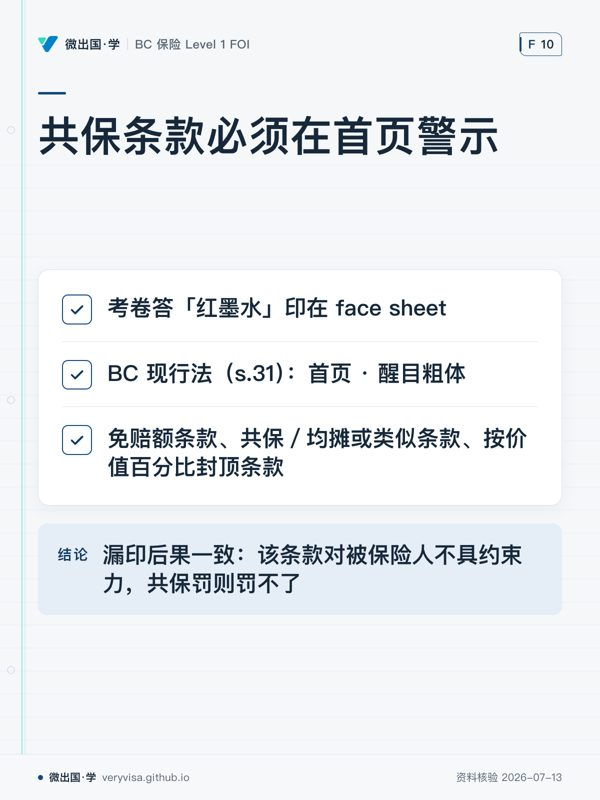
- 先看先分考场与柜台两个场景，形式要求别混用。
- 易漏真正要盯的是首页有没有那句话，它决定罚则能否落地。
- 下一步去练习，分别用考试口径和现行法判断一道题。
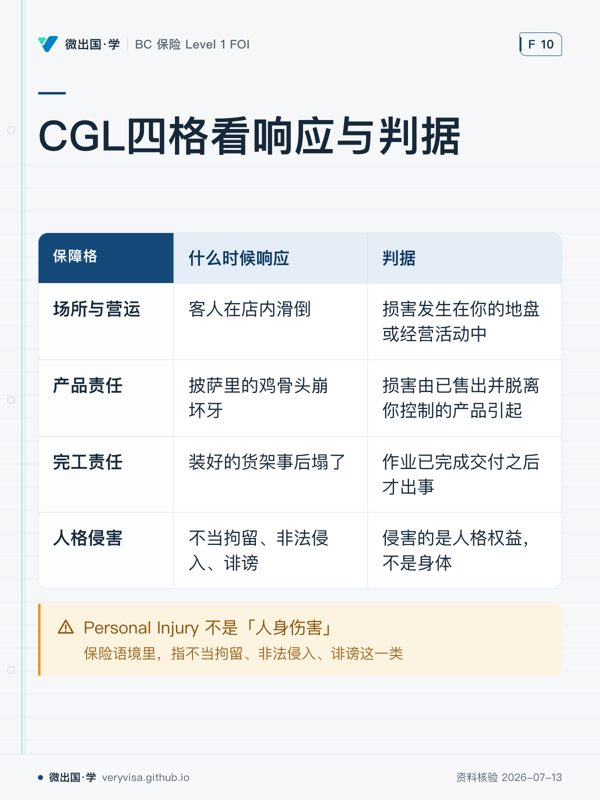
- 先看先用右列识别责任场景，再用左列例子校验。
- 易漏展示椅塌了摔断髋骨，是身体伤害，走场所责任。
- 下一步去练习，先按情境归类，再核对术语含义。
谁能把赔款减下去，损失证明搞砸了还有没有救
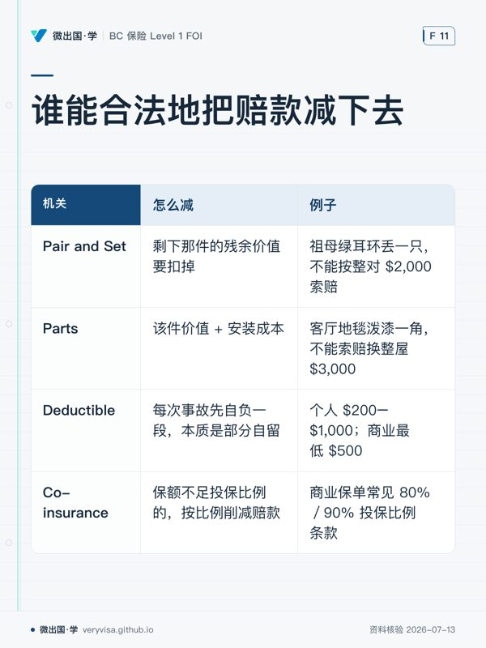
- 先看先看「怎么减」一栏；四行真正不同的是赔款被削减的方式。
- 易漏正文开头还列「按价值百分比封顶」；下表四行没有展开这一机关。
- 下一步去练习，看到例子先判断减赔机关，再选对应做法。
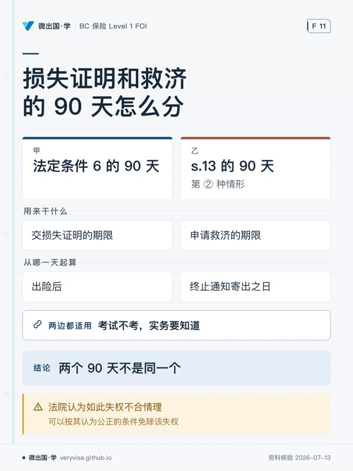
- 先看先比用途，再比起点；两栏看起来同长，法律动作完全不同。
- 易漏法院救济的时限只针对通知未收到的那种情形，不是所有失权救济都同一起点。
- 下一步去练习，先判断题目是在交证明还是在申请救济。
UDP 与 UDAP：谁必须登记，罚款怎么算
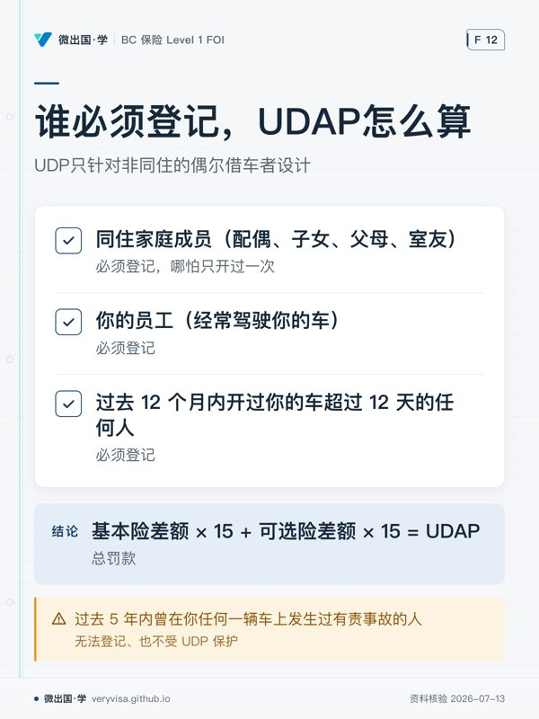
- 先看先区分哪些驾驶人要登记，再看事故后怎样计费。
- 易漏保费差额为零时，UDAP = $0，无需缴纳任何罚款。
- 下一步去练习，先判人员关系，再代入保费差额。
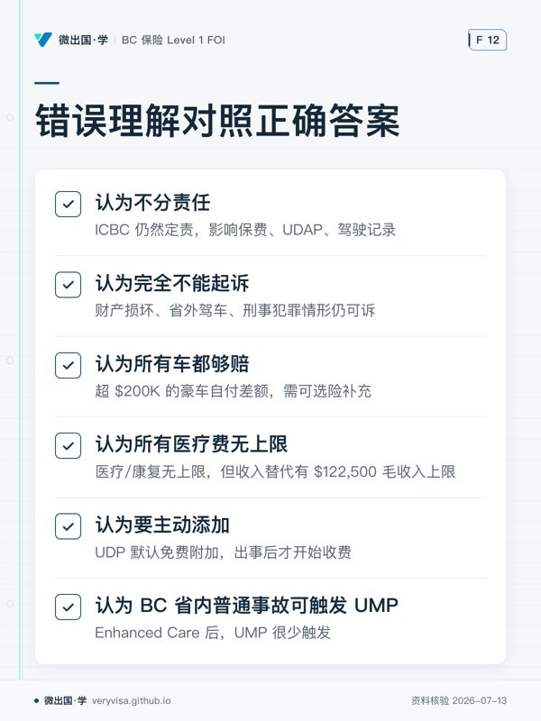
- 先看第一条先纠正责任认定；其余误解要逐条拆开。
- 易漏起诉、车损、医疗、UDP、UMP 各有自己的适用条件，不能互换。
- 下一步去模考，看到绝对化说法先找对应限制条件。
牌照边界：祖父条款差哪两条，数字先看单位
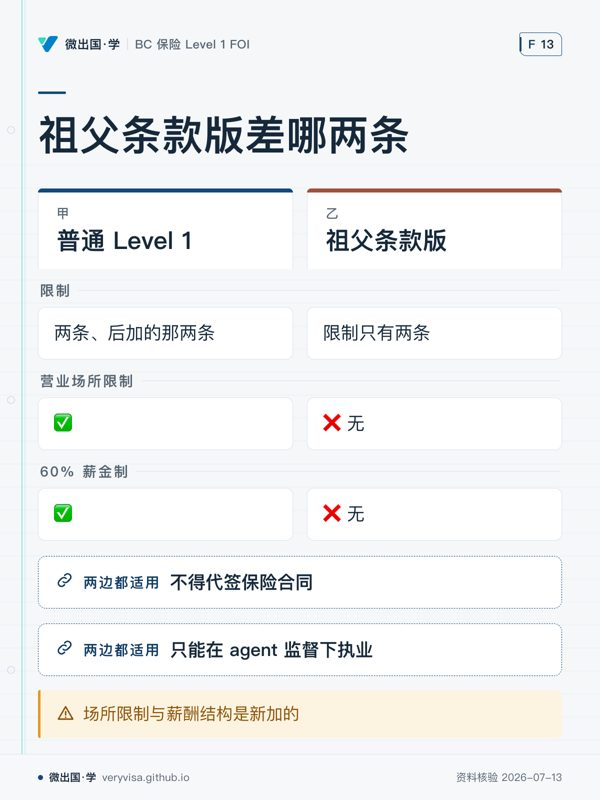
- 先看先看两条差异行；共同约束在两栏都存在。
- 易漏祖父条款指规则变严之前已持牌的人不受新增限制约束。
- 下一步去练习，把新增限制和原有约束分开判断。
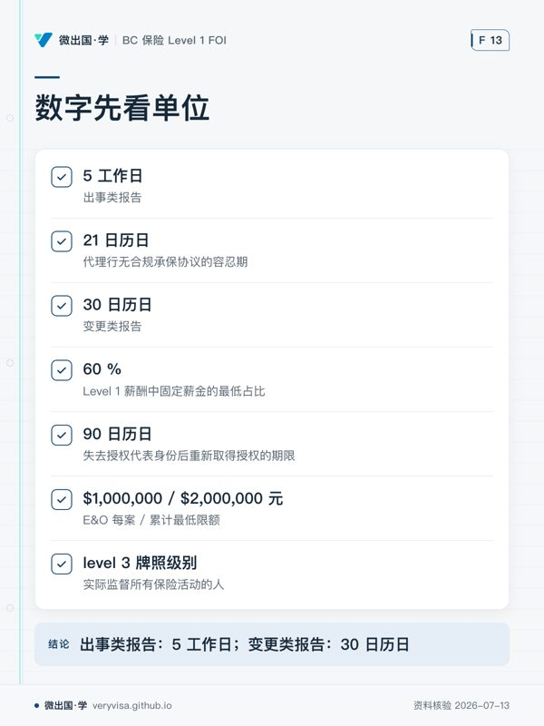
- 先看第一眼先认单位，别只盯数值大小。
- 易漏E&O 那组金额说的是最低限额，不是通知期限。
- 下一步去练习，答题时先报单位，再说对应事项。
MGA 一词两义，以及 BC 为什么没有这张牌
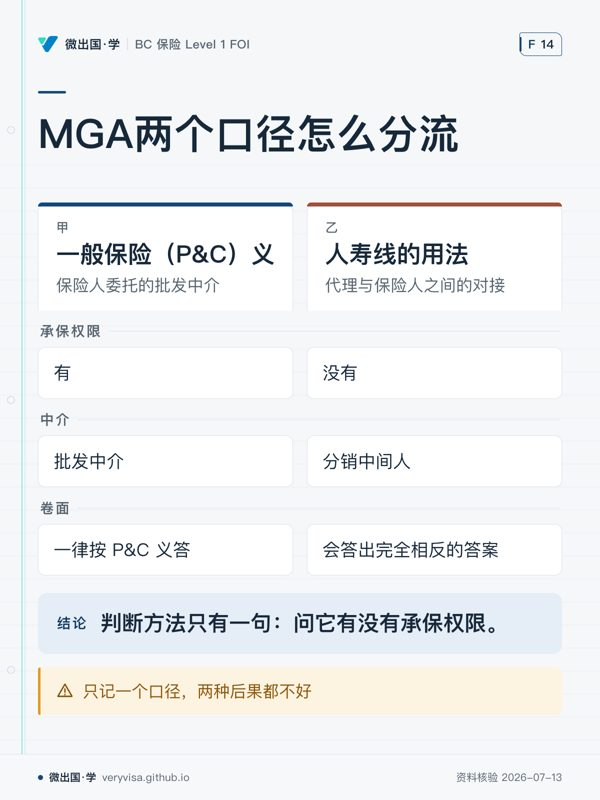
- 先看先抓唯一分界，再看两种行业用法各自落在哪边。
- 易漏行业沟通时，对面说的 MGA 可能不是卷面那个意思。
- 下一步去练习，先识别语境，再选对应口径。
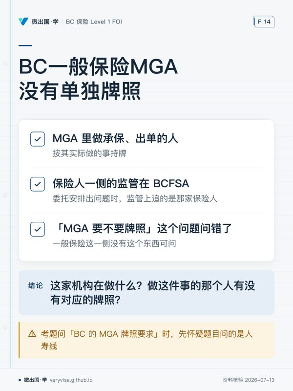
- 先看先把机构监管和个人持牌拆开看，别混成一个问题。
- 易漏受雇于 MGA 还是零售经纪行，与牌照规则无关。
- 下一步去练习，先问行为，再核对执行者的资格。
你和客户之间还站着谁，各自受谁管


隐私三层各管谁，PIPA 与 PIPEDA 怎么分
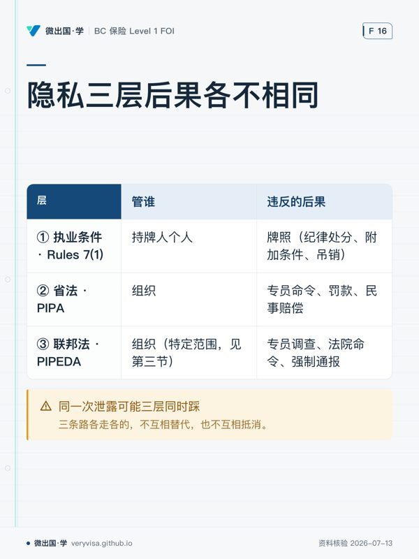
- 先看先横看后果这一列，分清个人执业与组织责任不是一回事。
- 易漏同一事件可同时进入多套处理路径，任何一条都不会自动替代其他路径。
- 下一步去知识卡，用一个泄露场景逐层判断会落到哪里。
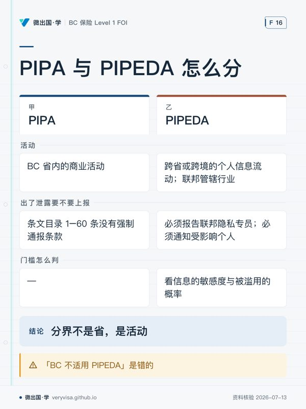
- 先看先看活动范围这一行，适用哪部法先由信息流动方式决定。
- 易漏信息留在 BC 并不能排除所有联邦情形，联邦管辖行业还有单独入口。
- 下一步去练习，先判活动范围，再回答通报问题。
无牌保险人：三层规则与逐笔四步


事实层怎么用：不联网、90 天、先对更正台账


FOI 这条路的钱与时限，折扣真相
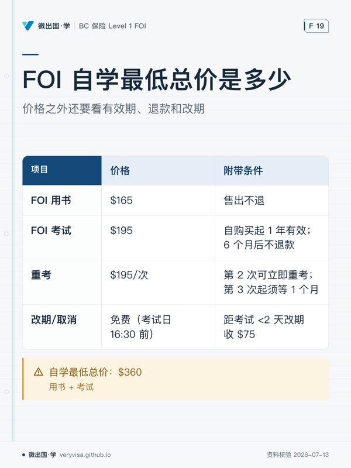
- 先看先看重考与改期两行，两项都可能再收费。
- 易漏考试购买后还有有效期和退款时点；改期收费另看离考试的天数。
- 下一步去路线确认是否自学，再到进度安排报名时点。
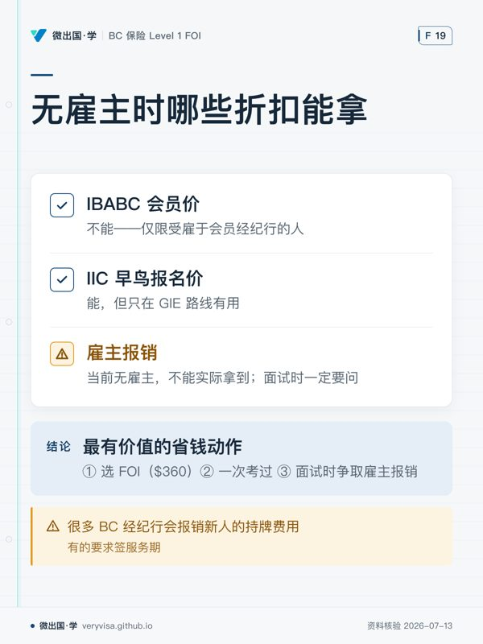
- 先看先看会员价和早鸟价的适用路线，别把能拿到和适合当前路线混在一起。
- 易漏雇主报销常见，但有的要求签服务期；当前无雇主时不能实际拿到。
- 下一步去路线确认 FOI 与 GIE，再到讲解核对会员价条件。
源分六级：哪一级能答题，哪一级不能进语料
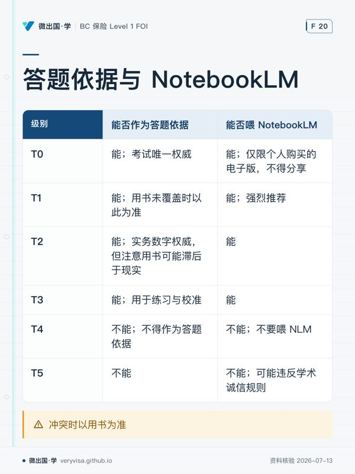
- 先看先横向对照两列，抓住引用与入库并非同一判断。
- 易漏最容易误把官网页面都当成可引用来源；来源冲突还要按层级处理。
- 下一步去练习，用一道题检查自己能否正确选源。
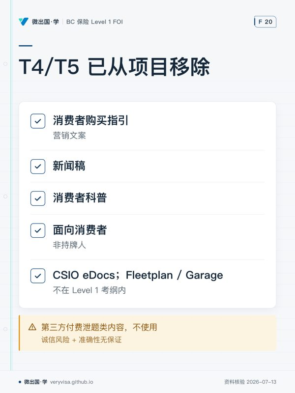
- 先看先看各类页面为何被排除，别只凭域名判断可用性。
- 易漏行业工具与车险商业页面也会越出本级考试范围，官方站点不等于考试来源。
- 下一步去讲解，带着「哪些页面会污染检索」再核一遍。
数字台账：旧值与现行值，ICBC 的关键数


自测一：三个监管者与 PACICC 的 BC 分叉
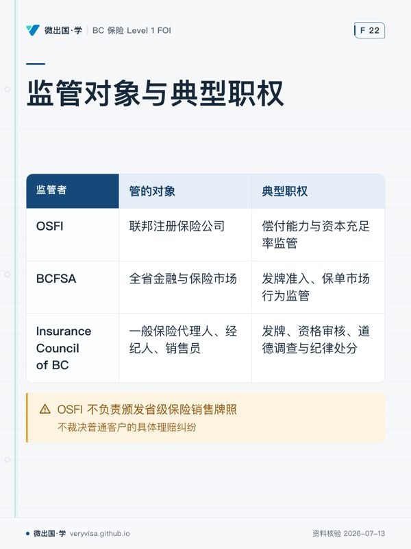
- 先看先按「管谁」定位，再读右栏，能最快排除职权混淆。
- 易漏联邦层面的机构并不包办省内销售牌照与个案理赔；层级不同，职责也不同。
- 下一步去练习，专做「给情境选机构」这类题。
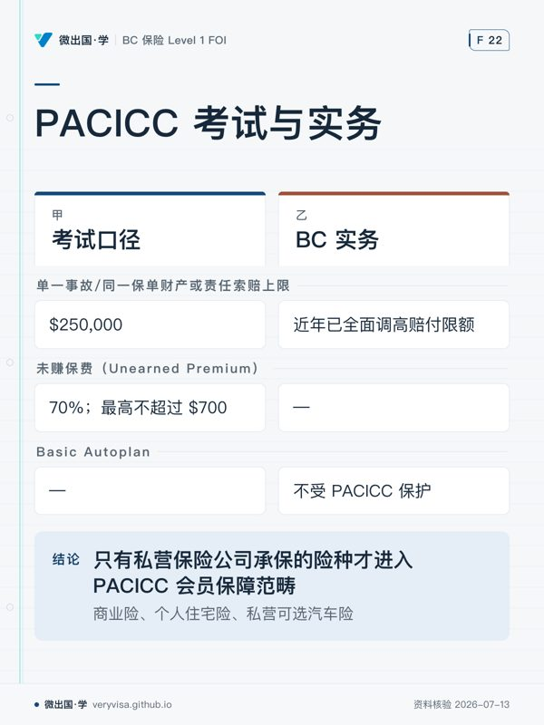
- 先看先看哪几行只有一侧有值；这正是考试记忆与省内实务不能硬套的地方。
- 易漏正文没有给出现行未赚保费退款数字，也没有给出考试对 Basic Autoplan 的单独规则。
- 下一步去讲解，带着「这条规则对应考试还是客户实务」再核对。
自测二：三处口径错位与火险三道天花板
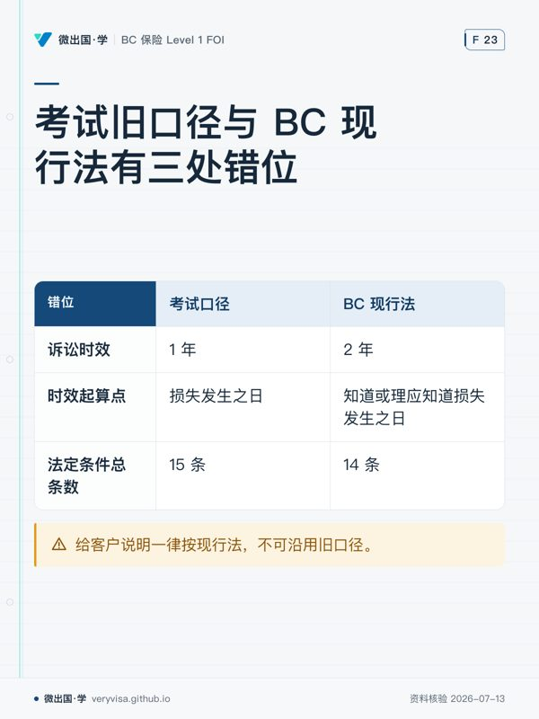
- 先看横向读两栏，逐行找变化。
- 易漏最容易混的是起点与期限，不只是数值。
- 下一步真实场景先核省内有效规则。
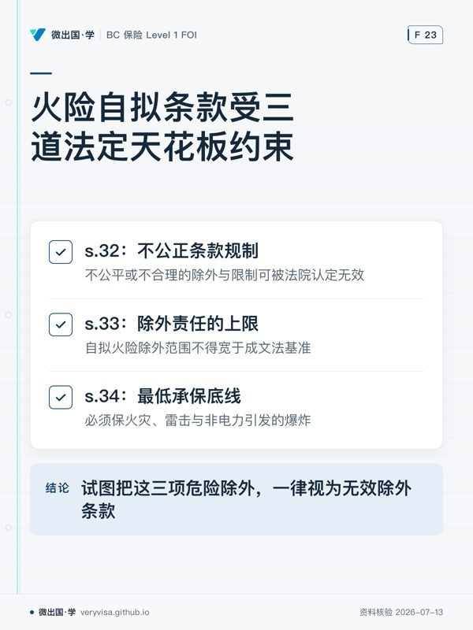
- 先看按三个法条分层定位争点。
- 易漏别把约定范围当成没有边界。
- 下一步最后判断争议约定还能否生效。
自测三：四条学历通道与 Binder 的两义


自测四：举证责任反转与委付要谁同意
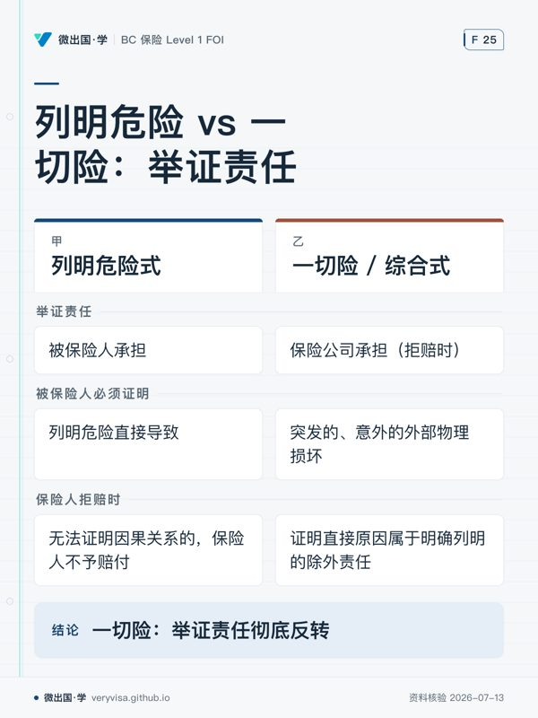
- 先看先对照第一行的承担方，位置一换，后两行就好读。
- 易漏综合式仍有起始证明要求；反转发生在保险公司主张除外时。
- 下一步去练习，把损失事实与除外原因分别放到对应一方。
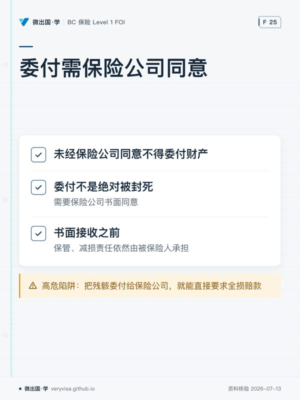
- 先看先看同意方式，再看残骸交接前谁还负担责任。
- 易漏能谈推定全损，不等于客户可单方面把财产交出去。
- 下一步去练习，遇到委付题先找保险公司的书面接收。
自测五：动产特别限额与空置的天数门槛


自测六：农场保险的缺口与商业一切险的除外


自测七：过失分析的五个问题与省别边界


自测八：读责任保单的五步与三条缺口
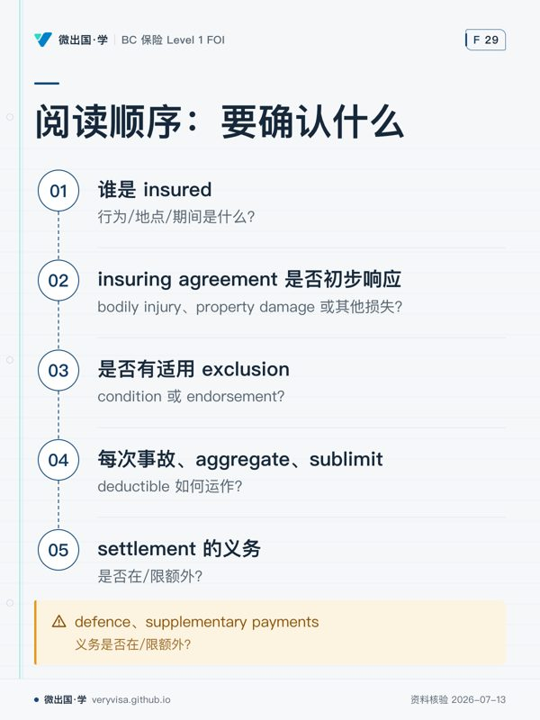
- 先看先按表中先后走，不要一看到损失就直接跳去限额。
- 易漏最后要把抗辩与补充给付的限额位置单独核清，不能漏在赔偿责任之后。
- 下一步去练习，拿一张条款按同一顺序逐格核对。
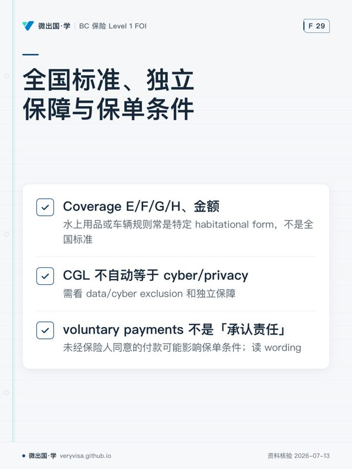
- 先看先看第一条，字母编号和金额最容易被误当成普遍规则。
- 易漏网络风险与自愿付款分属不同问题：一个看保障范围，一个看条件后果。
- 下一步去练习，每遇到缩写或固定金额先回到具体 wording。
自测九：农场核保按五个风险域建图


自测十：四类意外疾病与旅行产品的首要分析点


自测十一：牌照与监管按法域读，2026 的几个日期
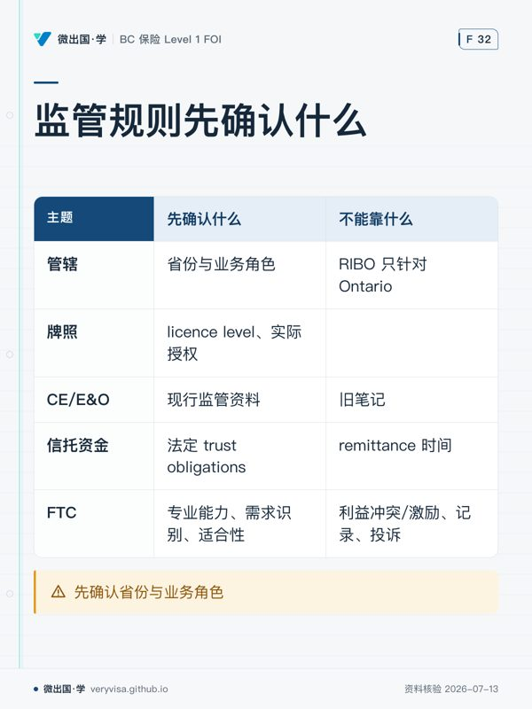
- 先看先从管辖与牌照两行读起，它们决定后面的监管资料该去哪里核对。
- 易漏信托义务与向保险人汇款的约定不是一回事；继续教育也不能依赖旧笔记。
- 下一步去讲义，按省份和业务角色整理监管资料。
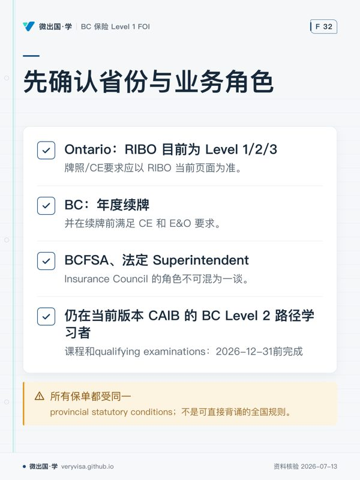
- 先看先分省份：Ontario 看 RIBO，BC 看续牌与角色。
- 易漏当前页面、续牌时点与版本截止分别限定不同规则，不能混读。
- 下一步去练习，先标出法域、时点和监管角色。
自测十二：车险先问哪个省、哪一天
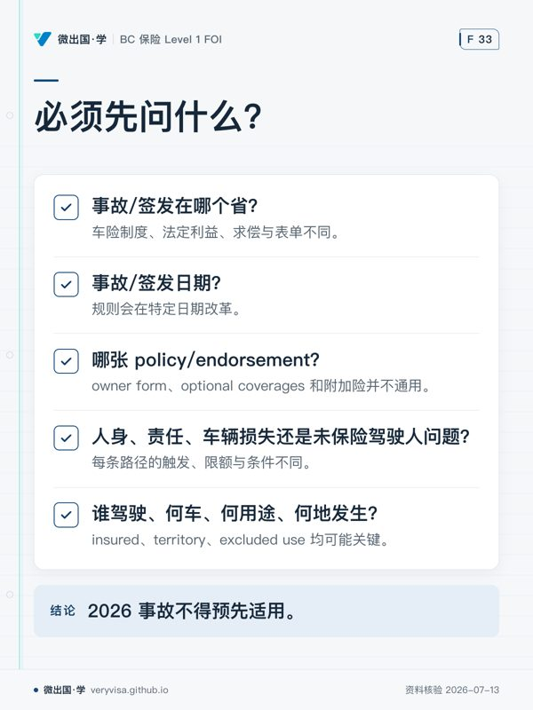
- 先看先看省份和日期，它们先决定适用哪套车险规则。
- 易漏同名保障、表单和附加险并不通用，还要核对驾驶人、车辆用途与发生地。
- 下一步去练习，逐项检查后再进具体保障路径。
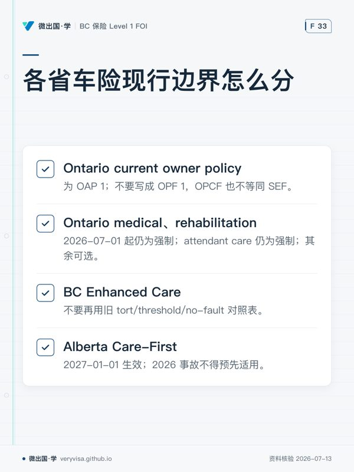
- 先看先按省份拆开看，Ontario、BC、Alberta 的制度名称和生效时点不同。
- 易漏Ontario 还要分车主保单表单与附加险代号；BC 不能沿用旧对照表。
- 下一步去练习，先写省份和事故日期再选规则。